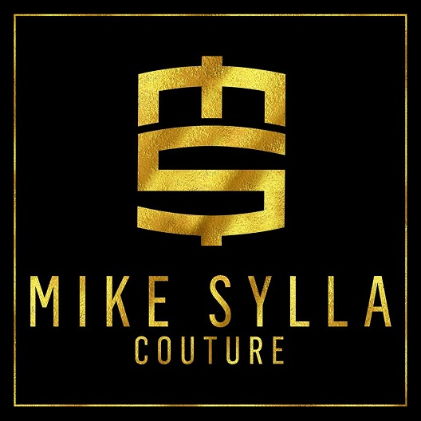
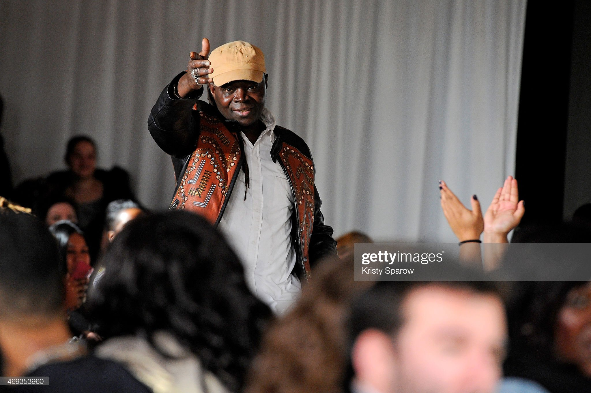

Bonjour, je suis
Zakaria KASMI
Etudiant en B3 informatique
Passionné d"informatiuqe et de technologie depuis mes 13 ans, j'ai décidé d'en faire mon avenir professionnel.
Qui suis-je ? StatistiquesÀ propos de moi
Je suis actuellement en troisième année d'informatique et je me spécialise cette année en cybersécurité. Auparavant, j'ai étudié l'informatique générale pendant deux ans, ce qui m'a permis de développer des compétences variées dans ce domaine. J'adore l'informatique, l'innovation, mais aussi les échanges avec les autres, car je pense que la technologie doit toujours servir les gens.
- Actuellement en recherche d'alternance &/ou stage
- Compétences en Linux & Réseau
- Compétences en développement
Mes Compétences
Je suis en troisième année d'informatique avec une spécialisation en cybersécurité. Je découvre et perfectionne mes compétences dans ce domaine tout en développant des projets web en parallèle, avec un coup de cœur pour PHP.
Identification des menaces
Utilisation de Kali Linux et d'outils comme Nmap pour détecter les vulnérabilités potentielles dans les réseaux et systèmes.
Sécurité des Réseaux
Surveillance des activités réseaux avec Nmap et mise en place de protections contre les intrusions.
Sécurité Web
Détection des failles web comme les injections SQL et XSS avec des outils comme Burp Suite.
Bases de données
Apprentissage des stratégies de sécurisation des bases de données.
Sécurisation du Wi-Fi
Mise en place de configurations de sécurité pour les réseaux Wi-Fi.
Développement Web
Je développe des sites et applications web avec un accent particulier sur PHP.
4+
Projet en cours
27+
Projet clos
3+
Serveur crées
15+
Projet sur github (cliquez-ici)
Quelques projets
Vous pouvez retrouver ici quelques projets que j'ai pu réaliser.
Forum PHP
Le but du projet était de créer un forum en php, avec base de données et sécurité.
- PHP Vanilla
- Mysql
- Traffic contrôle
Flappy bird (Unity)
Le but était de reproduire le célèbre jeu "Flappy Bird"
La découverte du Game développement
- C#
- Optimisation du script
- Animation
MonoGame (Full Code)
Ici, nous avons découvert MonoGame, un framework en C# pour réaliser des projets de jeux vidéos 2d
Création d'un Runner
- C#
- FrameWork MonoGame
- Optimisation du script
Fusée Game
Le but du projet était de se familiariser avec l'utilisation de Java.
Création du jeu de la fusée (crash game)
- Java
- Découverte totale
- Optimisation du script
UX/UI projet
Le but du projet est de comprendre l'importance de l'experience utilisateur.
Analyze The Current Security Posture
- Utlisation de Figma
- Développement HTML dans Figma
Mon stage
Vou routrevez juste ici ma première expériece professionelle dans le monde de l'informatique.
Bayfall Dreams - Présentation de l'entreprise
Présentation du Stage
Utilisation de Symfony et aspects techniques
Hébergement, DNS et sous-domaines

Sécurisation du serveur (SSH, Ubuntu)
Bilan des Connaissances Acquises
Bayfall Dreams - Présentation de l'entreprise
Mike Sylla est un créateur de mode, designer et artiste pluridisciplinaire sénégalais, reconnu pour ses contributions significatives à la mode africaine et internationale. Fondateur de l'entreprise Bayfall Dreams, il a su mêler avec brio la culture africaine traditionnelle et la mode contemporaine, créant des pièces uniques qui célèbrent l'héritage culturel de son continent tout en s'adaptant aux tendances modernes.
Bayfall Dreams, fondée au début des années 2000, est bien plus qu'une simple marque de mode. C'est une plateforme qui réunit l'art, la culture et la mode en un seul lieu d'expression. Mike Sylla est notamment connu pour ses créations en cuir et textile, où il utilise des matériaux récupérés et recyclés, faisant de ses vêtements des œuvres d'art écologiques. Son travail est un hommage au mouvement des Baye Fall, une confrérie mystique du Sénégal prônant la simplicité et la spiritualité.
L’une des particularités de Bayfall Dreams réside dans la diversité de ses créations, allant des collections de vêtements de haute couture aux accessoires et installations artistiques. Mike Sylla organise régulièrement des défilés à travers le monde, y compris à Paris, New York et Dakar, mettant en lumière l'élégance et la richesse de la mode africaine sur la scène internationale.
En parallèle de la mode, Mike Sylla est aussi très actif dans le domaine artistique en tant que chanteur et performeur. Son projet Bayfall Dreams incarne une fusion de toutes ces formes d'expression, rendant hommage à ses racines africaines tout en s’adaptant à un public international.
Aujourd'hui, Bayfall Dreams continue de croître, collaborant avec des artistes et des designers du monde entier, tout en restant fidèle à ses valeurs d'art, de tradition et d'innovation.
Source :
Présentation du Stage
Mon stage chez **Bayfall Dreams**, fondée par le créateur de mode **Mike Sylla**, s'est révélé être une expérience professionnelle très enrichissante. L'entreprise, spécialisée dans la mode et la culture africaine, m'a offert une opportunité unique de travailler sur le développement d'un site web en **PHP Symfony** destiné à renforcer la présence digitale de la marque. Ce projet s'inscrivait dans le cadre de leur transition vers une plateforme numérique plus solide et sécurisée.
1. Absence de Cahier des Charges et Autonomie
Contrairement à la plupart des projets où un cahier des charges détaillé est fourni dès le départ, ce stage a été particulier en ce sens qu'il n'y avait **aucun cahier des charges préétabli**. Il m'a donc été demandé de jouer un rôle clé dans la **définition des objectifs** et des **fonctionnalités du site**, en collaboration avec l'équipe. J'ai dû concevoir et structurer moi-même le cahier des charges, ce qui m'a permis d'approfondir mes compétences en **gestion de projet** et d’acquérir une grande autonomie dans la prise de décisions stratégiques concernant l'architecture du site.
Cette situation m'a également permis de travailler en étroite collaboration avec l'équipe créative et marketing de Bayfall Dreams pour m'assurer que la vision artistique et culturelle de l'entreprise était bien transcrite dans les aspects techniques du site. J'ai dû jongler entre les aspects techniques et créatifs, en garantissant que la structure du site réponde aux besoins de l'entreprise, tout en offrant une **expérience utilisateur fluide** et esthétiquement cohérente avec la marque.
2. Aspects Techniques et Défis
Le développement du site web a été un défi technique, d'autant plus que j'ai été chargé non seulement du développement, mais aussi de la gestion de l'**hébergement**, de la **configuration des DNS**, ainsi que de la **sécurisation du serveur**. Symfony a été l'outil principal utilisé pour développer le back-end du site, et j'ai pu mettre en place des fonctionnalités robustes telles que la gestion des utilisateurs, la sécurisation des connexions via des certificats SSL, ainsi que la gestion des rôles et permissions.
La sécurité a été un aspect crucial de ce projet. J'ai implémenté plusieurs solutions de **sécurisation** pour protéger les données des utilisateurs et garantir l'intégrité du site. Parmi les mesures prises, on retrouve la mise en place de **tokens CSRF** pour sécuriser les formulaires, ainsi que l'utilisation de l'**authentification par clé SSH** pour protéger les accès au serveur. Le serveur a été configuré pour répondre aux standards les plus élevés en matière de sécurité, incluant des pare-feux personnalisés et des systèmes de surveillance pour détecter et prévenir les tentatives d'intrusion.
3. Un Projet en Développement Continu
À ce jour, le site est encore en **phase de développement**, et n'est pas encore accessible au grand public. Toutefois, il est possible d'en obtenir un aperçu sur demande, à travers un lien privé sécurisé par une clé d'accès. Cette clé peut être fournie à toute personne intéressée par le projet et souhaitant voir l'avancement des travaux. Ce statut de "work-in-progress" signifie que je continue d'implémenter de nouvelles fonctionnalités, d'améliorer la sécurité et d'affiner les performances du site en temps réel.
Pour obtenir un accès au site en développement, veuillez me contacter directement, et je vous fournirai le lien et la clé d'accès nécessaires pour explorer le site.
Conclusion
Ce stage chez Bayfall Dreams m'a offert l'opportunité non seulement de mettre en pratique mes compétences techniques, mais aussi de développer une approche proactive et autonome face aux défis du développement web. La **création d'un cahier des charges** en partant de zéro et la prise en charge complète du projet m'ont permis de me responsabiliser à chaque étape, et de m'assurer que le produit final serait en adéquation avec les attentes élevées de l'entreprise.
Cette expérience a renforcé ma capacité à gérer des projets complexes, tout en m'enseignant l'importance de la communication entre les équipes techniques et créatives. Je ressors de ce stage avec une solide compréhension du processus de développement web dans un cadre professionnel, et je suis convaincu que ce projet jouera un rôle clé dans la réussite future de Bayfall Dreams sur la scène digitale.
Utilisation de Symfony et aspects techniques
Symfony est un framework PHP open-source très populaire pour le développement d'applications web. Utilisé par de nombreuses grandes entreprises et organisations, il permet de créer des projets robustes, sécurisés et scalables grâce à une architecture basée sur le modèle MVC (Modèle-Vue-Contrôleur) et une structure modulaire.
Symfony a été sélectionné pour ce projet en raison de sa flexibilité et de ses composants réutilisables, ce qui nous a permis de structurer le développement de manière modulaire. Chaque fonctionnalité, de la gestion des utilisateurs à la sécurisation des routes, a été gérée par un composant spécifique afin de garantir une maintenance simplifiée et une évolutivité du projet à long terme.
1. Gestion des utilisateurs
L'une des principales fonctionnalités du projet était la gestion des utilisateurs. Grâce à Symfony et à son bundle **Symfony Security**, nous avons pu implémenter des fonctionnalités telles que :
- Inscription des utilisateurs
- Connexion sécurisée
- Gestion des rôles et permissions (utilisateurs/admins)
- Réinitialisation des mots de passe
2. Utilisation de Twig pour le rendu des pages
Symfony utilise **Twig**, un moteur de templates très performant, pour le rendu des pages. Cela a permis de créer des interfaces utilisateur dynamiques, tout en maintenant une séparation claire entre la logique d'affichage et la logique métier. Les templates Twig permettent également une meilleure lisibilité du code et une flexibilité dans le design des pages.
3. Sécurisation de l'application
La sécurité était une priorité dans ce projet, notamment en raison de la gestion de données sensibles. Symfony fournit une protection intégrée contre les attaques courantes telles que les attaques **XSS** (Cross-Site Scripting) et **CSRF** (Cross-Site Request Forgery). Voici les principales mesures de sécurité mises en place :
- Validation et filtration des entrées des utilisateurs
- Utilisation de tokens CSRF pour sécuriser les formulaires
- Hachage des mots de passe avec **bcrypt**
- Utilisation de certificats SSL pour sécuriser les communications
4. Optimisation des performances
Symfony offre plusieurs outils pour optimiser les performances des applications, notamment via :
- Le cache HTTP, pour stocker les réponses et réduire le temps de chargement des pages
- Le préchargement des routes et des services pour accélérer le traitement des requêtes
- L'optimisation de la base de données en utilisant **Doctrine ORM**, un composant de gestion de base de données
5. Suivi des bonnes pratiques
En plus de la modularité et de la sécurité, l'utilisation de Symfony nous a permis de suivre les **meilleures pratiques du développement** web. Parmi celles-ci :
- Respect des standards **PSR** pour garantir un code propre et facilement maintenable
- Tests unitaires avec **PHPUnit** pour garantir la stabilité du projet
- Utilisation de **Git** pour le versioning et le suivi des changements
Conclusion
En utilisant Symfony, nous avons pu développer un projet robuste et sécurisé qui répond aux besoins de l'entreprise. Grâce à ses composants modulaires et à sa communauté active, Symfony permet une grande flexibilité dans le développement, tout en assurant une scalabilité et une performance optimale pour les projets web modernes.
Source :
Hébergement, DNS et sous-domaines
L'hébergement web est un aspect crucial pour garantir la disponibilité et la performance d'un site web. Pour ce projet, nous avons opté pour un hébergement sur un serveur **Ubuntu** configuré manuellement, afin de garder un contrôle total sur la gestion des ressources et la sécurité du site. En complément, la configuration des **DNS** (Domain Name System) et des **sous-domaines** a permis de structurer le site et ses services, tout en assurant une navigation fluide pour les utilisateurs.
1. Hébergement sur un serveur Ubuntu
Nous avons choisi **Ubuntu Server** comme système d'exploitation pour l'hébergement en raison de sa stabilité, de sa sécurité et de sa large adoption dans le domaine des serveurs web. La configuration du serveur a été réalisée via **SSH** (Secure Shell) pour permettre une administration à distance en toute sécurité. Le serveur Ubuntu a été configuré pour optimiser les performances et la sécurité :
- Installation de **Apache** pour servir les fichiers web
- Utilisation de **Let's Encrypt** pour mettre en place le protocole **HTTPS** (SSL/TLS)
- Mise en place de règles **UFW** (Uncomplicated Firewall) pour limiter les accès au serveur
- Utilisation de **Fail2ban** pour prévenir les attaques bruteforce sur SSH
2. Gestion des DNS
Les **DNS** jouent un rôle essentiel dans la conversion des noms de domaine en adresses IP. Pour ce projet, la configuration DNS a permis d’associer le nom de domaine principal à l'adresse IP du serveur Ubuntu. Voici les principaux enregistrements DNS utilisés :
- A Record : Associe le nom de domaine à l'adresse IP du serveur
- CNAME Record : Utilisé pour créer des alias de domaines, par exemple www.domain.com pointant vers domain.com
- MX Record : Pour la gestion des emails (si applicable), redirigeant les emails vers le serveur de messagerie
3. Sous-domaines et segmentation du projet
La mise en place de **sous-domaines** permet de segmenter différentes parties du site ou des services tout en les liant à un même domaine principal. Dans ce projet, les sous-domaines ont été utilisés pour créer différentes sections du site, par exemple :
- api.domain.com : Pour servir l'API de l'application
- admin.domain.com : Interface d'administration sécurisée pour gérer les utilisateurs et le contenu
- blog.domain.com : Hébergement d'un blog ou d'une plateforme de contenu externe
Cette séparation logique permet d'améliorer la sécurité et l'évolutivité du projet, car chaque sous-domaine peut être configuré indépendamment avec des règles spécifiques (pare-feu, authentification, etc.).
4. Sécurisation et optimisation
La sécurité du serveur a été renforcée par l’utilisation d’une connexion **SSH** sécurisée avec des clés SSH au lieu de mots de passe, limitant ainsi les risques d’attaques par force brute. De plus, des services comme **Fail2ban** et **UFW** ont permis de restreindre les accès non autorisés. L'optimisation des performances du serveur a été assurée par :
- Mise en cache via **Varnish Cache** pour accélérer les temps de réponse
- Compression Gzip pour minimiser la taille des fichiers envoyés aux utilisateurs
- Surveillance des ressources du serveur avec **HTOP** et **Monit** pour prévenir tout goulot d'étranglement
Conclusion
Grâce à la configuration d'un hébergement sur serveur Ubuntu, d'une gestion DNS efficace et d'une segmentation via des sous-domaines, ce projet a réussi à garantir une navigation rapide, fluide et sécurisée. L'infrastructure mise en place permet une gestion flexible du site et peut facilement évoluer pour s'adapter aux besoins futurs de l'entreprise.
Sources :
Sécurisation du serveur (SSH, Ubuntu)
La sécurisation d'un serveur est primordiale pour garantir la protection des données sensibles et assurer la stabilité des services. Pour ce projet, nous avons utilisé plusieurs méthodes avancées pour sécuriser le serveur hébergeant l'application, en commençant par la sécurisation des accès via **SSH**, et en mettant en place diverses protections contre les attaques courantes.
1. Sécurisation de l'accès via SSH
**SSH (Secure Shell)** est le protocole standard pour accéder et administrer un serveur de manière sécurisée. Dans ce projet, nous avons pris plusieurs mesures pour renforcer la sécurité des connexions SSH :
- Authentification par clé SSH : L'utilisation de clés SSH a remplacé l'authentification par mot de passe, ce qui rend beaucoup plus difficile pour les attaquants de deviner les informations de connexion. Cela implique de générer une paire de clés (publique et privée) où la clé privée reste confidentielle et est utilisée pour se connecter au serveur.
- Désactivation de l'accès root direct : Pour limiter les risques d'intrusion, l'accès direct au compte root via SSH a été désactivé. Seuls les utilisateurs autorisés peuvent se connecter et ils doivent utiliser la commande **sudo** pour obtenir des privilèges administratifs.
- Changement du port par défaut : Par défaut, SSH fonctionne sur le port 22. Nous avons modifié ce port pour éviter les attaques automatisées qui ciblent spécifiquement ce port.
- Limitation des tentatives de connexion : Des outils comme **Fail2ban** ont été configurés pour surveiller les tentatives de connexion et bannir automatiquement les adresses IP après plusieurs tentatives échouées.
2. Mise en place d'un pare-feu
Le **pare-feu UFW** (Uncomplicated Firewall) a été configuré pour contrôler les accès au serveur. UFW permet de définir des règles simples pour autoriser ou bloquer le trafic entrant et sortant. Voici les règles principales qui ont été mises en place :
- Autorisation du trafic entrant uniquement sur les ports nécessaires (HTTP, HTTPS, SSH)
- Blocage de tout autre trafic entrant non sollicité
- Mise en place de limites sur les connexions SSH pour réduire les risques d'attaques par force brute
3. Mise en place de certificats SSL/TLS
Pour assurer la confidentialité des données échangées entre les utilisateurs et le serveur, nous avons installé des certificats **SSL/TLS** via **Let's Encrypt**. Cela permet de chiffrer toutes les communications entre le client et le serveur, notamment les identifiants de connexion et les données personnelles des utilisateurs.
De plus, le site a été configuré pour rediriger automatiquement toutes les requêtes HTTP vers HTTPS, garantissant que toutes les communications soient sécurisées.
4. Surveillance et détection des intrusions
La surveillance continue du serveur a été mise en place grâce à des outils comme **Fail2ban** et **Monit**. Ces outils surveillent en permanence l'activité du serveur pour détecter les tentatives d'intrusion et prévenir les attaques.
- Fail2ban : Cet outil surveille les logs du serveur et bannit temporairement les adresses IP qui tentent d'accéder au serveur après plusieurs échecs de connexion.
- Monit : Outil de surveillance qui permet de suivre en temps réel l'état des services critiques du serveur (CPU, mémoire, processus, etc.), et d'envoyer des alertes en cas de dysfonctionnement.
5. Sécurisation des applications et des bases de données
En plus de la sécurisation des accès et du serveur lui-même, nous avons pris des mesures spécifiques pour sécuriser les applications hébergées et les bases de données :
- Accès restreint aux bases de données : Seuls les utilisateurs spécifiques, ayant des rôles définis, peuvent accéder à la base de données.
- Utilisation de mots de passe forts et stockage des mots de passe de manière sécurisée avec des algorithmes de hachage comme **bcrypt**.
- Configuration d’un **pare-feu interne** pour isoler la base de données du reste du réseau, ne permettant l'accès qu'aux services web autorisés.
Conclusion
En combinant plusieurs couches de sécurité, depuis la sécurisation des accès via SSH jusqu'à la surveillance proactive avec Fail2ban et Monit, nous avons mis en place une infrastructure sécurisée qui protège les données et le serveur contre les menaces externes. Ces mesures garantissent que le serveur est à la fois performant et sécurisé, tout en assurant une protection continue contre les attaques courantes.
Sources :
Bilan des Connaissances Acquises
Ce stage a marqué une étape décisive dans mon parcours professionnel, tant sur le plan technique que sur le plan humain. Au début de ce projet, je m'attendais à acquérir des compétences techniques en développement, mais ce que j'ai retiré de cette expérience va bien au-delà de la simple maîtrise des outils et des langages de programmation. Ce fut un véritable voyage au cœur de la réalité professionnelle et des exigences d'un projet d'envergure.
1. Maîtrise des Outils et Technologies
D'un point de vue purement technique, j'ai pu développer une maîtrise solide des technologies que j'ai utilisées, notamment **Symfony** pour le développement back-end, et l'importance cruciale de la **sécurité** dans la conception des applications web. Symfony, au début intimidant par son architecture complexe, s'est révélé être un allié puissant une fois les fondamentaux assimilés. Chaque ligne de code m'a appris non seulement à structurer un projet de manière rigoureuse, mais aussi à penser en termes d'évolutivité et de performance à long terme.
La mise en place de **mesures de sécurité** m'a confronté à des questions que je n'avais pas anticipées. Protéger les données des utilisateurs, sécuriser les accès et garantir que chaque requête soit traitée de manière confidentielle étaient autant de défis qui m'ont appris à avoir une vue d'ensemble sur la **protection des informations sensibles**. Chaque détail compte lorsqu'il s'agit de sécurité, et cette rigueur m'accompagnera dans tous mes futurs projets.
2. Gestion des Projets et Autonomie
Au-delà des compétences techniques, j'ai appris à gérer un projet dans sa globalité. Cette gestion ne concerne pas seulement la partie développement, mais aussi la **planification**, la **communication** et la **résolution des problèmes**. Être capable de comprendre les besoins d'un client, de les traduire en solutions techniques viables et de s'assurer que les délais sont respectés demande bien plus que du code.
L'une des leçons les plus précieuses que j'ai tirées de ce stage est sans doute l'importance de l'**autonomie**. Travailler sur ce projet m'a permis de me confronter à des situations où j'ai dû trouver moi-même des solutions, chercher des alternatives quand un obstacle se présentait et surtout, apprendre à me faire confiance. L'autonomie est une compétence qui ne s'apprend pas en théorie, elle se vit. Et ce stage m'a offert l'opportunité de l'exercer au quotidien.
3. Travail d’Équipe et Communication
Même en travaillant de manière autonome, j'ai compris à quel point la **communication** reste au cœur de tout projet réussi. Collaborer avec des membres de l'équipe ou échanger avec les clients pour s'assurer que leurs attentes sont bien comprises a été une part importante de mon travail. Savoir expliquer clairement des concepts techniques complexes à des personnes non techniques est une compétence qui s'est révélée cruciale et que j'ai pu affiner au fil du projet.
Au début, je pensais que les projets de développement étaient essentiellement des tâches solitaires, mais ce stage m'a montré l'importance du **travail d'équipe**. Chaque projet est en réalité une collaboration, où chaque membre de l'équipe apporte sa contribution unique, et où le partage de connaissances enrichit le résultat final.
4. Évolution Personnelle et Professionnelle
Ce stage n'a pas seulement été une immersion dans le monde du développement web, il a aussi été une opportunité pour moi de me remettre en question, de me dépasser et d'apprendre à mieux gérer mes **émotions** face aux défis. J'ai compris que l'erreur fait partie intégrante du processus d'apprentissage, et c'est en échouant, parfois, que l'on apprend les leçons les plus profondes.
Cette expérience m'a fait prendre conscience de l'importance d'avoir un **état d'esprit ouvert** et de ne jamais cesser d'apprendre. Chaque jour a été une nouvelle occasion d'acquérir des connaissances, que ce soit en explorant un nouveau framework, en résolvant un bug, ou simplement en prenant du recul pour analyser une situation sous un angle différent.
Conclusion
En conclusion, ce stage m'a apporté bien plus que ce que je n'aurais imaginé. Non seulement j'ai développé des compétences techniques essentielles pour ma carrière, mais j'ai également acquis une meilleure compréhension de moi-même, de mes capacités et de mes limites. Je ressors de cette expérience non seulement en tant que développeur plus compétent, mais aussi en tant que professionnel plus confiant et prêt à relever de nouveaux défis. Ce projet restera une pierre angulaire de mon parcours, un point de référence qui marquera le début de mon évolution dans le monde du numérique.
Prenez contact avec moi !
Pour vos projets ou vos offres d'emplois.